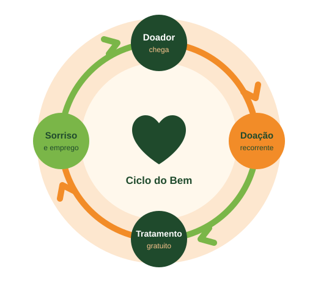
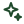

75%
do orçamento de 2025 veio de patrocínio de empresas — de cerca de 10 patrocinadores.
Se um grande patrocinador sai, o caixa cai e jovens ficam sem tratamento.
O Ciclo do Bem é uma plataforma que encontra, qualifica e fideliza apoiadores — pessoas físicas e empresas — para que a Turma do Bem dependa menos de poucos patrocinadores.

A Turma do Bem oferece tratamento odontológico gratuito a quem mais precisa. Mas a maior parte do dinheiro que mantém esse trabalho vem de um grupo pequeno de empresas.
75%
do orçamento de 2025 veio de patrocínio de empresas — de cerca de 10 patrocinadores.
Se um grande patrocinador sai, o caixa cai e jovens ficam sem tratamento.
No programa Amigos da Turma. A base de pessoas físicas ainda é pequena.
Hoje não se sabe quantos doadores param de doar a cada ano.
Prazos e inscrições de editais e leis de incentivo ficam em planilhas soltas.
Doações digitadas à mão no Salesforce e renovação de contratos revisada só no fim do ano.
Fonte: respostas da Turma do Bem às dúvidas do Challenge FIAP (2026).
O Ciclo do Bem organiza a captação de pessoas físicas e de empresas no mesmo lugar, com um histórico único e um painel para a equipe.
Cada módulo resolve uma dor que a própria Turma do Bem nos contou.
Pessoas físicas, empresas e parceiros com todo o histórico.
Print lido por IA e doador cadastrado automaticamente.
Mensagens no momento certo, por e-mail e WhatsApp.
Resultados agregados e anônimos para o doador.
Da prospecção à renovação, com a próxima ação.
Prazos, aderência e status das inscrições.

Quem abordar, quem pode sair e qual edital vale a pena.
Responde as dúvidas mais comuns dos doadores na hora.
Os quatro verbos que a Turma do Bem pediu no kickoff do desafio guiam toda a plataforma.
Novos doadores pela Nota Fiscal Paulista e empresas sugeridas pela IA.
Pontuação de quem tem mais chance de doar ou patrocinar.
Funis claros, com etapa, responsável e próxima ação.
Régua automática, relatórios de impacto e alertas de renovação.
Navegue pelas telas do portal do doador, do funil de patrocinadores e do painel da equipe.